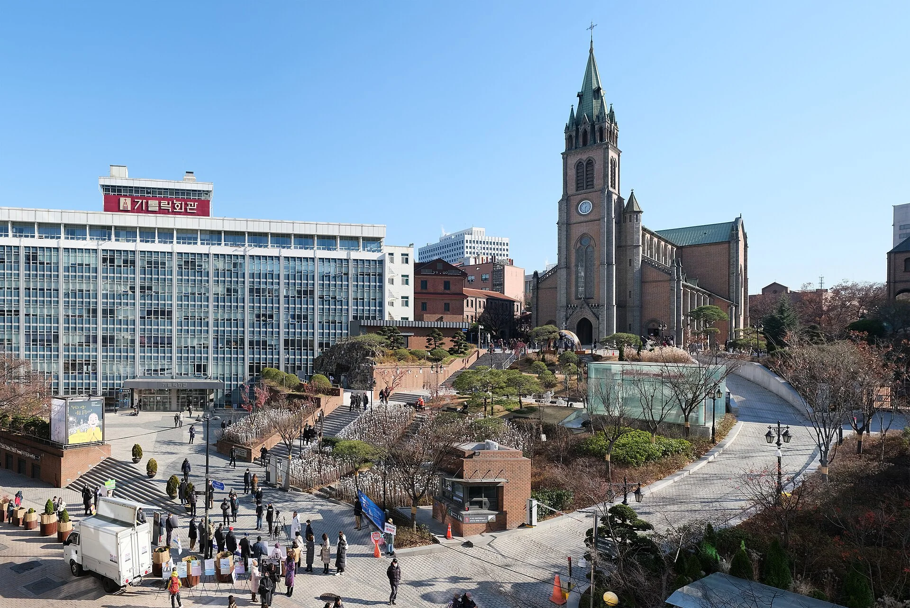
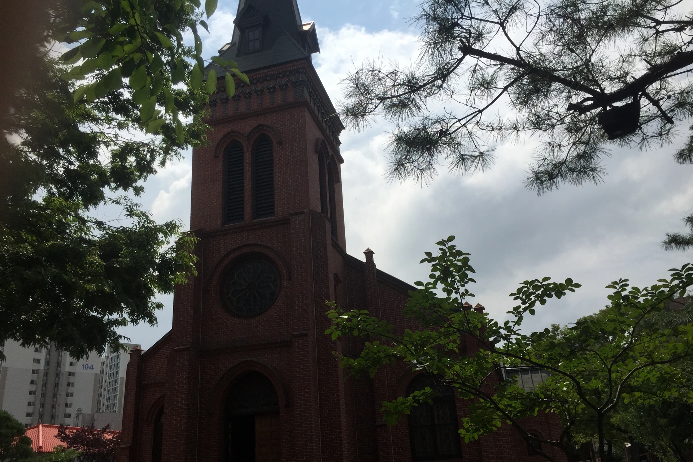
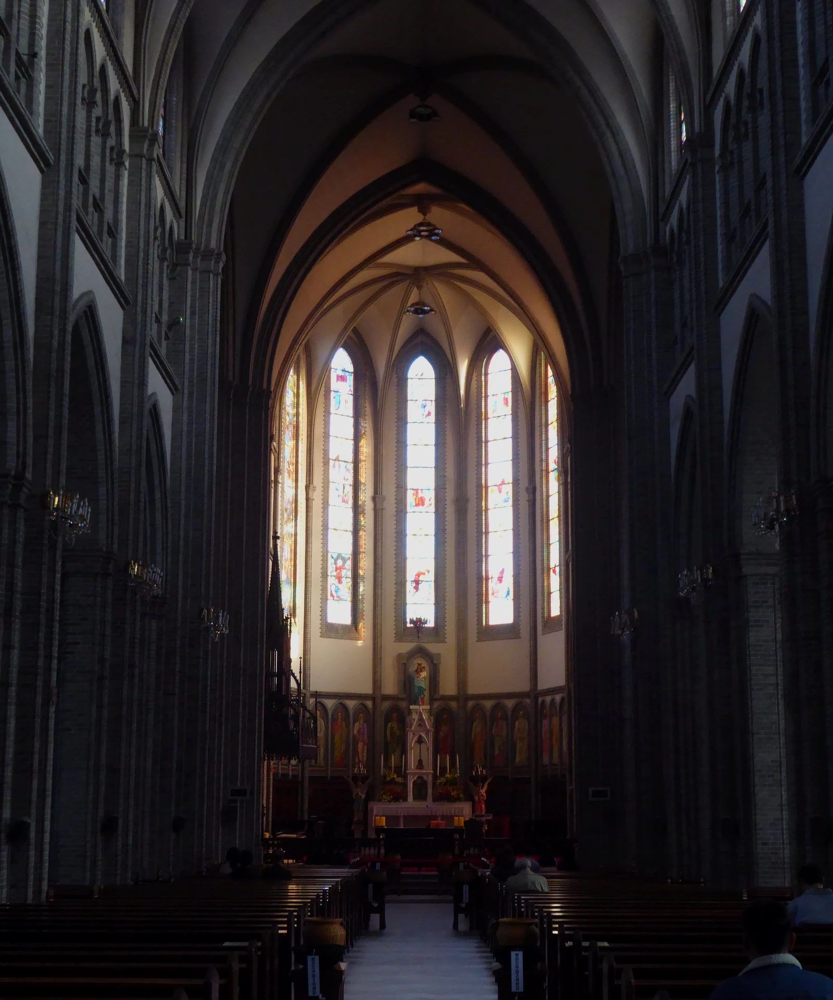

아직 펼치지 않은 카드우리 옷을 입은 성경 이야기 · 3이남규의 스테인드글라스서양 성당의 그림을 그대로 옮기지 않고, 한국 화가의 색과 추상으로 성당 창을 채운 사람이 있어요. 누구였을까요?우리나라 성당의 색유리 창을 처음 만든 화가가 있대.
1980~1984년서울 · 명동대성당
이남규의 스테인드글라스
1898년 명동대성당이 세워질 때 들어온 유리창은 6·25 전쟁 등을 거치며 상했어요. 1980년부터 1984년까지 그 창을 되살린 사람이 한국 유리화의 선구자 이남규예요. 어두운 성당에서, 창으로 빛을 들여 보세요.
아주 오래된 성당의 색유리 창이 전쟁 때 다쳤대. 한 화가가 그 창을 다시 살려서 빛이 들어오게 했어. 우리도 손으로 빛을 들여 볼까?
검수 전 시안이에요(기준서 1판). 이남규가 디자인한 유리화는 저작권이 남아 있어 싣지 않았어요. 비추기 사진 속 창은 1898년에 들어와 그가 되살린 명동대성당의 옛 창이에요. 상상은 ‘눈 감고 상상해 보기’에만 썼어요.
시안 확인용카드 단계 미리 보기
1
빛을 배운 길
이남규는 1931년 대전 유성에서 태어났어요. 서울대 미술대학에서 그림을 공부하며 학장 장발에게서 추상 그림과 종교 미술에 눈을 떴고, 1957년 대전 대흥동주교좌성당에서 세례를 받았어요.
1968년 장익 신부의 주선으로 오스트리아로 건너가, 슐리어바흐 수도원의 유리 공방에서 2년 동안 유리화를 배웠어요. 이어 파리에서 지내며 1970년 첫 개인전을 열었어요.

1974년, 그는 한국 사람으로는 처음으로 서울 중림동 약현성당에 유리화를 만들었어요. 약현성당은 1892년에 지은, 우리나라 첫 서양식 성당이에요. 그 뒤 혜화동성당, 절두산 순교성지 같은 성당과 교회 60여 곳에 유리화를 만들었어요.
그가 디자인한 유리화는 저작권이 남아 있어 이 카드에 싣지 않았어요. 아래에서는 그가 되살린 명동대성당의 옛 창을 만나요.
오스트리아의 산골 수도원에서 색유리 창 만드는 법을 배웠대. 돌아와서는 우리나라 성당에 처음으로 색유리 창을 만들었어.
물어보기색유리 창을 만들려면 무엇 무엇이 있어야 할까?
2
다시 드는 빛
명동대성당은 1898년 5월 29일 성령 강림 대축일에 축성되었어요. 이 성당 유리창에서는 ‘GESTA Frères(제스타 형제)’라는 서명이 발견되었어요. 연구자 정수경은 이 서명을 근거로, 창이 프랑스 툴루즈의 제스타 공방에서 만들어졌을 것으로 봐요.
창은 6·25 전쟁 등을 거치며 상했어요. 1980년부터 1984년까지 이남규가 그 창들을 되살렸어요. 아래 어두운 성당을 문질러, 창으로 빛을 들여 보세요.
어두운 성당이에요. 손가락이나 마우스로 문질러, 창으로 빛을 들여 보세요.

명동대성당 안에서 제대 쪽을 바라본 모습, 2019년 · 사진: Ethan Doyle White · CC BY-SA 4.0 · 위키미디어 공용
빛이 닿으면 숨은 표시가 나타나요.
1898년에 들어온 창이 전쟁으로 상했다가, 1980~84년 이남규의 손으로 되살아났어요. 오늘도 그 창으로 빛이 들어요.
1980년, 전쟁으로 상한 1898년의 옛 창 앞에 선 화가라면 어떻게 했을까요?
깜깜한 성당이야. 손으로 문지르면 창으로 빛이 들어와!
물어보기창으로 빛이 들어오면 성당 안이 어떻게 달라질까?
눈 감고 상상해 보기
오후의 성당은 서늘하고 조용해요. 긴 의자 사이를 걸어 들어가면, 제대 뒤 높은 창에서 붉고 푸른 빛이 번져 나와요. 백 년도 더 된 유리, 전쟁에 다쳤다가 다시 살아난 창이에요. 빛이 바닥에 조용히 내려앉아요.
눈을 감아 봐. 조용한 성당이야. 높은 창에서 빨강, 파랑 빛이 쏟아져. 바닥에 색 조각이 내려앉았어!
나의 자리
처음 본 붉은 벽돌 성당이에요. 여기서는 보이지 않는 저 안 제대 뒤에서, 이남규가 되살린 1898년의 창들이 빛을 들여요.
햇빛이 색유리를 지나 바닥에 내려앉는 모습을 본 적이 있나요? 그때 어떤 마음이 들었나요?
색유리로 창을 만든다면 어떤 색을 넣고 싶어?
마음에 닿는 한 줄을 고르거나 직접 써 보세요. 한 줄을 남기면 이 자리의 도장이 찍혀요. 이 기기에만 저장돼요.
더 깊이
궁금한 칸만 펼쳐 읽어도 괜찮아요.
알고 보면
첫 유리화 1974년 약현성당의 유리화는 한국 사람이 만든 첫 성당 유리화로 꼽혀요. 우리나라에 ‘스테인드글라스’라는 말조차 낯설던 때였어요.
가르친 사람 원광대와 공주사범대 교수로 학생들을 가르쳤어요. 1988~1991년에는 가톨릭미술가회 회장을 맡았어요.
마지막 작업 1991년 일곱 번째 개인전을 앞두고 쓰러졌고, 1993년 세상을 떠났어요. 2003년 가톨릭미술상 특별상을 받았어요.
화집 아내 조후종 교수가 3년 넘게 모아 1996년에 낸 화집에는, 45개 성당에 있는 그의 유리화 180여 점이 실렸어요.
30주기 2023년 명동의 갤러리 1898에서 30주기 특별전 ‘생명의 빛 - 위로와 환희’가 열렸어요.
기록마다 다른 점
첫 유리화의 해 1974년(가톨릭신문 2023), 1975년 완성(가톨릭평화신문 2016), 1973년(한국일보 1996)으로 달라요. 한국민족문화대백과사전의 목록은 1978년 혜화동성당부터 적어요.
오스트리아에 머문 때 1968년부터 2년(한국일보 1996), 1968~1970년 오스트리아와 파리(가톨릭신문 2023)로 적혀 있어요.
창을 만든 곳 정수경(2016)은 서명을 근거로 프랑스 툴루즈의 제스타 공방을 꼽아요. 「내셔널 가톨릭 레지스터」(2006)는 프랑스 베네딕도회 수도원에서 만들었다고 여겨진다고 적어요.
창과 함께 읽는 말씀
직접 가 보기
확인한 날 · 2026년 11월 18일 · 바뀌기 쉬운 정보라 정기적으로 다시 확인해요
명동대성당은 서울 중구 명동에 있어요. 미사 중에는 둘러보기 어려우니 미사가 없는 때에 조용히 들어가 보세요. 미사 시간은 성당 누리집에서 확인해 주세요.
약현성당, 혜화동성당처럼 그의 유리화가 있는 성당도 미사 시간을 피해 찾아가 보세요. 어느 창이 그의 작품인지는 성당마다 물어보세요.
창에 든 빛 금박
어두운 성당을 비춰 표시 다섯 곳을 다 찾으면 카드에 금박이 입혀져요.
어두운 성당을 비춰 표시 다섯 곳을 다 찾기
옛 창 앞에서 채색
둘 가운데 하나만 해도 카드가 채색돼요.
상한 옛 창 앞에 선 화가라면 어떻게 했을지 고르기
아이와 함께 ‘영화처럼 보기’를 끝까지 보기
근거 보기 (10)
- 가톨릭신문(2023년 8월 27일, 최용택) 30주기 기념전 약력 — 1931년 대전 유성, 장발, 1957년 대흥동주교좌성당 세례, 1968~1970년 슐리어바흐 수도원 유리 공방과 파리, 1970년 파리 첫 개인전, 1974년 약현성당, 60여 곳, 1980~1984년 6·25전쟁 등으로 훼손된 명동대성당 유리화 복원, 원광대·공주사범대, 1991년 쓰러짐, 1993년 선종, 2003년 가톨릭미술상 특별상
- 한국민족문화대백과사전 「이남규」(이구열, 1995) — 1968년 장익 신부의 주선, 오스트리아 공방, 파리, 1970년 귀국, 유리화 목록, 가톨릭미술가회 회장(1988~1991)
- 한국일보(1996년 9월 21일) 「고 이남규 스테인드글라스 화집」 — 1968년 슐리어바흐 수도원 공방에서 2년, 조후종 교수의 화집, 45개 성당 180여 점, 약현성당(1973)·명동성당(1980~84)
- 정수경, 교회사연구 49(2016) 193–217 초록 — 1898년 명동 주교좌성당, ‘GESTA Frères’ 서명, 툴루즈 루이 빅토르 제스타 집안의 공방 추정
- 가톨릭신문(2018년 5월 27일) 축성 120주년 명동대성당 발자취 — 1898년 5월 29일 성령 강림 대축일 축성, 원죄 없이 잉태되신 복되신 동정 마리아께 봉헌, 코스트 신부의 설계·감독
- 국가기록원 ‘기록으로 보는 명동성당’ — 1892년 착공, 1898년 준공, 우리나라 첫 벽돌 교회, 고딕식, 1977년 사적
- National Catholic Register(2006년 7월 3일) 「Korean Freedom」 — 창의 주제(묵주기도의 신비, 탄생과 동방박사, 예수와 열두 제자), 프랑스 베네딕도회 수도원에서 만들었다고 여겨짐
- 가톨릭평화신문(2016) 약현성당 유리화 — 이남규의 첫 작품, 1975년 완성, 1892년에 지은 한국 첫 서양식 교회 건축
- 가톨릭평화신문(2023) 30주기 특별전 ‘생명의 빛 - 위로와 환희’, 갤러리 1898, 세례명 루카
- 대한성서공회 개역개정: 누가복음 1장 · 마태복음 2장
그림·사진·소리 출처
‘처음 만나는 기독교 문화’의 깊은 카드예요. 사람 얼굴이 알아볼 만큼 나오는 사진은 쓰지 않았어요. 카드 단계와 남긴 글은 이 기기에만 저장돼요.